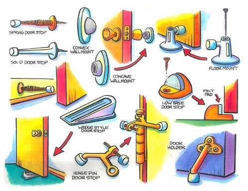

Over the years, traditional impromptu front-door stops have included everything from Grandpa’s duck decoy to jars of pennies to umbrella stands. They keep the doorknob from bumping into the wall - or the door from being closed suddenly by an errant breeze or cross draft. But there’s a better, more elegant and permanent solution.
To prevent damage to the wall from the doorknob, the best solution is a permanent doorstop of some kind. Depending on your needs and tastes, they can be mounted on the baseboard, the floor, the center hinge of the door, or on the wall. Exact placement is important. If you have a damaged doorstop, installing its replacement will be a no-brainer. But a door without a stop gives you some interesting choices.
Let me say first that I never work on a door without a small safety wedge, which is a kind of portable doorstop. Made of rubber or wood, it will keep the door stable and stationary. Until you have been struck in the forehead by someone opening the door you are working on, as I have, you may think this is excessive caution. Ever since the second time it happened, I have used two wedges, one on either side.
Hinge-mounted types are the easiest to install - just pull the center hinge and put it through the stop, tap the hinge back down in place, and adjust the screw mechanism until the knob misses the wall by a good half-inch. (Putting it on the center hinge places it in the middle of the door to balance the pressure applied to it.) But it works best only on light interior doors. The same is true of doorstops that mount on the baseboard molding.
For a heavier portal such as the front door, a floor mount often is best. A wall-mounted stop requires heavy framing precisely at the doorknob’s point of contact with the wall. Doorstops that are mounted only on drywall will most likely be pushed right into the wall. On the floor, however, you always know there’s something solid to screw into, and you can put the doorstop wherever you need it. This can be important if the entryway is tiled, so you can position the doorstop so that it's over the grouted area between tiles but on the level tile surface.
Using the wedge(s) to secure the door, fine-tune the placement of the floor stop. When you’ve decided, close the door all the way - and lock or wedge it, for your head’s sake - and take another look. If it’s out of the way of foot traffic, nobody will trip on it.
If the bottom sweep of your front door is no more than half an inch, consider a low-base doorstop with a rounded top. They’re much easier to sweep around and far less likely to stub a toe than a high floor-mount stop. With the proper doorstop, you'll protect your toes and your walls.
For information on doors, see How to Repair Screens and How to Adjust Screen Doors.
How many times have you punched a hole in a wall with a doorknob? Share the story in the comments section below.
|
ISTOCKPHOTO/ROB CRUSE To prevent accidents while working on doors, use a wedge to prevent the door from swinging. |
 BOB RECH Your selection of the right doorstop will depend on the weight of the door and the strength of the wall or floor you can attach the doorstop to. |
|